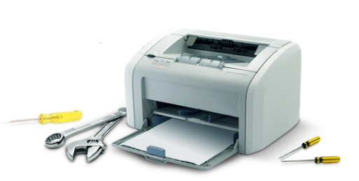

Ремонт принтеров
Наш технический отдел занимается ремонтом и обслуживанием лазерных принтеров и МФУ с выездом к клиенту в пределах города Усть-Каменогорск. Мы осуществляем платный послегарантийный ремонт принтеров ведущих мировых производителей и даем гарантию на выполненные услуги.
В Сервисном центре в Усть-Каменогорск имеются в наличии и на заказ запасные детали, качественные расходные материалы и современное оборудование для диагностики и перепрограммирования принтеров и картриджей. Квалификация мастеров позволяет произвести ремонт в короткие сроки. Также мы производим заправку картриджей и восстановление.
На данный момент на рынке в сфере ремонта лазерных принтеров обстановка серьёзна затруднена. Причиной является не только отсутствие сервисных центров компаний производителей, но и неадекватно завышенная стоимость работ, да и не желание производить качественный ремонт в принципе, всячески затрудняя обслуживание, всё предельно просто зачем ремонтировать проще продать новый. Если у вас нет лишних финансов на новый принтер или многофункциональное печатающее устройство, то мы можем восстановить и продлить срок службы сломавшегося принтера.
В большинстве случаев, пользователи компьютеров сами могут подключить себе принтер, сканер, мфу. Но бывают моменты, когда не получается это сделать самостоятельно. Или драйвер не подходит, или компьютер не видит устройство, так или иначе Вам необходима помощь квалифицированного специалиста. К Вам на помощь придет специалист технического отдела. Вы можете самостоятельно привезти принтер в наш офис или позвонить и заказать доставку принтера нашими силами.
Мы несём полную ответственность и гарантируем качество проделанной работы!
В Сервисном центре в Усть-Каменогорск имеются в наличии и на заказ запасные детали, качественные расходные материалы и современное оборудование для диагностики и перепрограммирования принтеров и картриджей. Квалификация мастеров позволяет произвести ремонт в короткие сроки. Также мы производим заправку картриджей и восстановление.
На данный момент на рынке в сфере ремонта лазерных принтеров обстановка серьёзна затруднена. Причиной является не только отсутствие сервисных центров компаний производителей, но и неадекватно завышенная стоимость работ, да и не желание производить качественный ремонт в принципе, всячески затрудняя обслуживание, всё предельно просто зачем ремонтировать проще продать новый. Если у вас нет лишних финансов на новый принтер или многофункциональное печатающее устройство, то мы можем восстановить и продлить срок службы сломавшегося принтера.
Настройка принтеров и МФУ
В большинстве случаев, пользователи компьютеров сами могут подключить себе принтер, сканер, мфу. Но бывают моменты, когда не получается это сделать самостоятельно. Или драйвер не подходит, или компьютер не видит устройство, так или иначе Вам необходима помощь квалифицированного специалиста. К Вам на помощь придет специалист технического отдела. Вы можете самостоятельно привезти принтер в наш офис или позвонить и заказать доставку принтера нашими силами.
Мы несём полную ответственность и гарантируем качество проделанной работы!